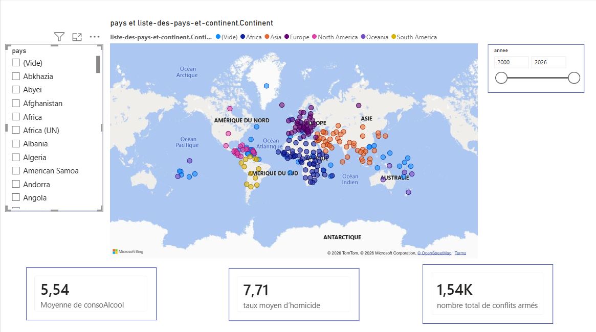
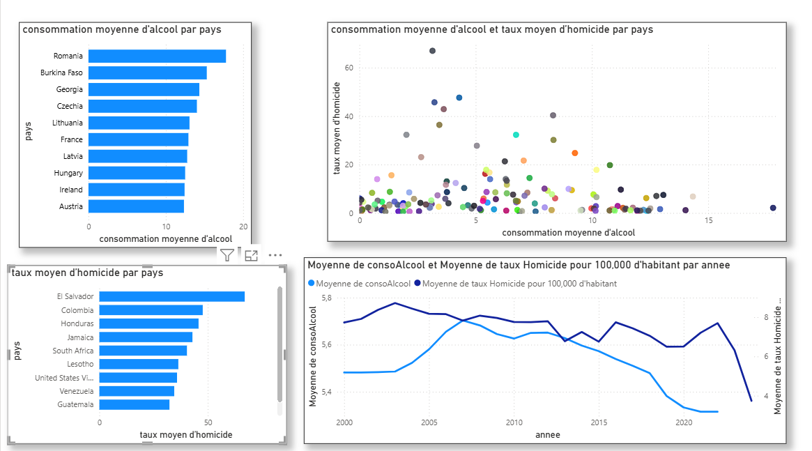
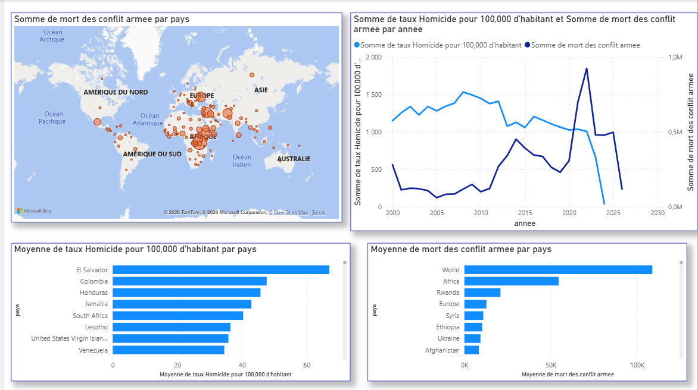
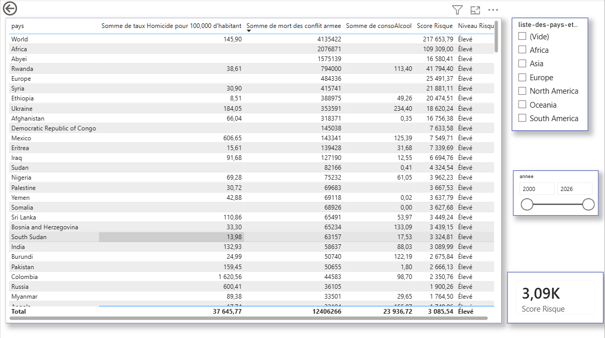

Alcool, Homicides & Conflits
Analyse croisée de plusieurs indicateurs afin d'étudier les liens entre la consommation d'alcool, les taux d'homicides et les conflits armés à l'échelle mondiale.

Comprendre les facteurs associés à la violence à travers les données
Problématique
Existe-t-il une relation observable entre la consommation d'alcool, les taux d'homicides et les conflits armés selon les pays et les années ?
Objectif
Explorer les différences entre les pays, identifier les zones les plus touchées et comparer plusieurs indicateurs afin de faire ressortir des tendances et des profils de risque.
Périmètre
L'analyse porte sur différents pays et continents et permet d'observer l'évolution des indicateurs selon les années sélectionnées.
Approche
Le dashboard combine des indicateurs clés, des cartes, des graphiques de comparaison et un tableau croisé afin de proposer plusieurs niveaux de lecture.
De la donnée brute à l'analyse interactive
Préparation des données
Les données sont préparées et structurées afin de permettre leur exploitation dans Power BI et leur comparaison selon les pays, les années et les continents.
Modélisation
Les différentes informations sont organisées afin de faciliter les croisements entre les indicateurs liés à l'alcool, aux homicides et aux conflits.
Indicateurs
Des KPI sont utilisés pour synthétiser les principaux indicateurs et permettre une lecture rapide de la situation mondiale.
Visualisation
Les cartes, nuages de points, classements et tableaux croisés permettent d'explorer les données sous différents angles.
Une vision globale des principaux indicateurs
Cette première page fournit une vue d'ensemble de la situation mondiale à travers plusieurs indicateurs clés. Les filtres permettent de modifier l'analyse selon l'année et le continent.
Page 1 — Vue mondiale du dashboard.
Consommation moyenne d'alcool
Cet indicateur permet de comparer le niveau moyen de consommation d'alcool selon les différentes zones géographiques.
Taux moyen d'homicide
Le taux moyen d'homicide fournit un indicateur synthétique du niveau de violence observé dans les zones analysées.
Conflits armés
Le nombre total de conflits armés permet d'identifier l'ampleur des situations de conflit dans le périmètre étudié.
Filtres interactifs
Les filtres par année et par continent permettent de passer d'une vision mondiale à une analyse géographique ou temporelle plus précise.
Explorer la relation entre consommation d'alcool et homicides
Cette page se concentre sur la comparaison entre la consommation d'alcool et le taux d'homicide. Elle permet également d'identifier les pays qui présentent les niveaux les plus élevés pour chacun des indicateurs.

Page 2 — Analyse de la consommation d'alcool et du taux d'homicide.
Nuage de points
Le nuage de points permet d'observer la distribution des pays selon leur consommation d'alcool et leur taux d'homicide et d'identifier d'éventuelles tendances ou concentrations.
Top 10 — Consommation
Le classement met en évidence les dix pays présentant les niveaux de consommation d'alcool les plus élevés dans les données analysées.
Top 10 — Homicides
Ce classement permet d'identifier les pays présentant les taux d'homicide les plus élevés.
Analyse croisée
La comparaison des deux indicateurs permet d'examiner si les pays présentant une forte consommation d'alcool sont également ceux présentant les taux d'homicide les plus élevés.
Mettre en perspective les conflits armés et la violence
Cette troisième page élargit l'analyse en intégrant les conflits armés afin de comparer leur répartition géographique avec les niveaux d'homicides.

Page 3 — Analyse des conflits armés et des homicides.
Carte des pays en conflit
La représentation cartographique permet de localiser les pays concernés par des conflits armés et de visualiser leur répartition géographique.
Conflits vs homicides
Le graphique met en parallèle le nombre de conflits armés et les niveaux d'homicides afin d'examiner leur distribution selon les pays.
Classement des pays
Le classement permet d'identifier les pays les plus touchés selon les indicateurs retenus dans le dashboard.
Lecture géographique
Cette vue permet de comparer les situations entre régions et de repérer les zones présentant les niveaux les plus importants.
Construire une lecture synthétique du risque
La dernière page rassemble les différents indicateurs dans une vue comparative par pays. Elle permet de filtrer les résultats selon plusieurs dimensions.

Page 4 — Analyse comparative par pays.
Tableau croisé
Le tableau permet de comparer les différents indicateurs pour chaque pays et de faciliter l'identification des profils présentant des niveaux élevés.
Score de risque global
Un score global permet de synthétiser plusieurs dimensions de l'analyse afin de faciliter la comparaison entre les pays.
Segmentation géographique
Les segments par continent permettent de restreindre l'analyse à une zone géographique spécifique.
Analyse temporelle
Le filtre par année permet d'observer les différences entre les périodes sélectionnées et d'affiner la comparaison.
Ce que le dashboard permet d'étudier
Dimension géographique
Identifier les continents et les pays présentant les niveaux les plus élevés selon les indicateurs étudiés.
Dimension temporelle
Comparer les indicateurs selon les années afin d'observer leur évolution et les changements de situation.
Analyse croisée
Mettre en relation plusieurs indicateurs afin de dépasser une lecture isolée de chaque variable.
Compétences Data mises en pratique
Power BI
Conception d'un dashboard interactif composé de plusieurs pages d'analyse.
Data Visualization
Utilisation de cartes, KPI, nuages de points, classements et tableaux pour représenter les données.
Analyse exploratoire
Exploration des relations entre plusieurs variables et comparaison des profils des pays.
DAX
Création de mesures et d'indicateurs nécessaires à l'analyse et à la visualisation des données.
Power Query
Préparation et transformation des données avant leur exploitation dans le modèle.
Storytelling Data
Organisation des visualisations afin de construire une lecture progressive allant de la vue mondiale à la comparaison par pays.
Un dashboard pour passer de la visualisation à l'analyse
Ce projet m'a permis de mettre en pratique l'analyse et la visualisation de données avec Power BI en combinant plusieurs sources d'indicateurs. L'organisation en quatre pages permet de passer progressivement d'une vue mondiale à une analyse détaillée des relations entre alcool, homicides et conflits armés.